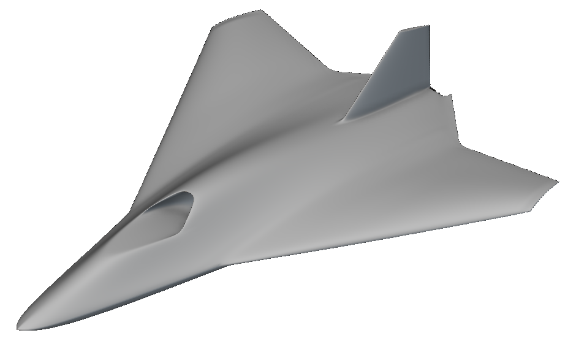
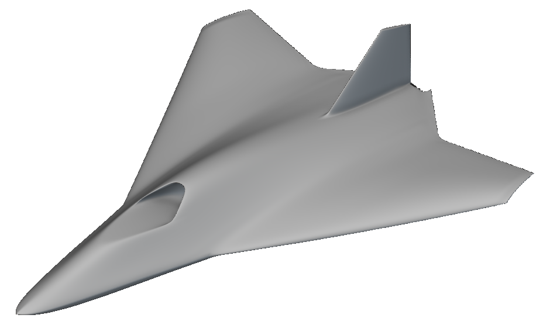
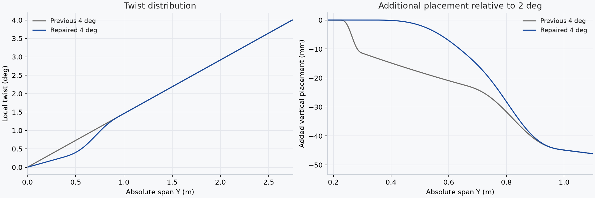
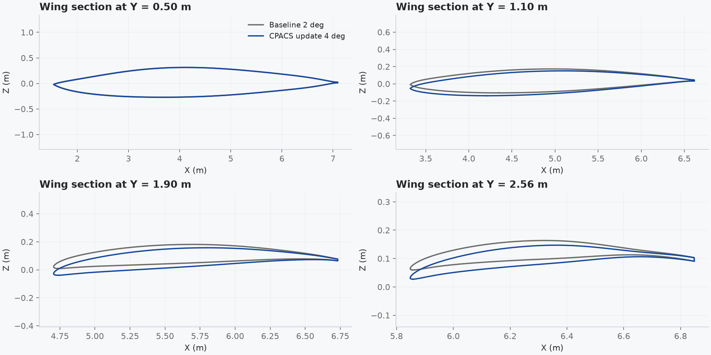

GBI TO CPACSNotebook API round trip
Export the GBI aircraft to CPACS, edit tip twist, and rebuild the native model through the nTop Notebook API.
The bridge connects a shared aircraft definition to an existing nTop design control. Native section measurements carry the geometry into CPACS.
Verified result
The CPACS request changes native tip twist from 2° to 4°. The repaired wing/body transition builds successfully.
Measured in the retained demo run. The bridge supports this GBI parameter contract; the native notebook remains the geometry authority.
ntop:tipTwistDeg to 4 in the CPACS tool metadata. Validate the request before applying it.(measured)
(derived from the files)
(derived; Y = 1.700 m)
01 / NATIVE GEOMETRYThe aircraft before and after the update
The views use the same camera, scale, and render settings. Each image shows the saved native notebook.


02 / TWIST TRANSITION REPAIRA smooth transition beside the center body
The previous 4° model added 11.614 mm of vertical placement across the existing narrow root band. This produced the visible crease.
The updated construction retains the original 2° shape in that band. A smooth gate distributes the additional twist through the wing/body transition.

Native checks use 288 fixed points per model. The protected-band field difference is 5.3e-14 m. The outer-station field difference at Y = 1.5 m and 2 m is 0 m.
These values compare scalar fields, not surface distances. The repair addresses the reported root crease. It does not establish global surface fairness or aerodynamic performance.

03 / MEASURED SECTIONSThe native control changes the wing sections
Gray shows the 2° baseline. Blue shows the 4° update. Both curves use native contour samples at the same span station.

The native tip-twist control affects the model's twist and section-placement construction. The sampled fin sections remain unchanged.
04 / VERIFICATIONReadback, schema, and geometry checks
The checks below use the live API receipts, saved notebooks, and exported CPACS files.
| Check | Evidence | Result |
|---|---|---|
| Native control | The API reads 2° before the change and 4° after it, with explicit degree units. | Pass |
| Native build | The final airframe returns e_OK after the update. | Pass |
| Saved notebook | The API reopens the final file at 4° with build state e_OK. | Pass |
| Recipe comparison | Both recipes contain the smooth transition. Only the supported tip-twist value changes during the round trip. | Pass |
| CPACS schema | Both exports validate against the official 3.5.1 schema and typed nTop extension. UID references resolve. | Pass |
| Point reconstruction | Independent CPACS transform decoding gives 8.95e-16 m maximum numerical error at the exported samples (derived). | Pass |
| Unsupported edits | The importer rejects geometry edits, nonfinite values, and unverified twist values. | Pass |
| Source preservation | The retained Rev38 source has the expected SHA256. The completed run also verified the original source file. | Pass |
Point reconstruction tests serialization and coordinate transforms. It does not establish surface accuracy between sections.
05 / SUPPORTED SCOPEA parameter bridge for GBI Rev38
CPACS contains 20 wing/body sections and 11 fin sections. The mirrored wing/body and rotated fin use normalized airfoil coordinates.
CPACS contains sampled exterior sections. Inlet and exhaust passages, fin-root blending, and exact geometry between sections remain in the native notebook.
The 0.002 m slice setting controls sampling. It is not a measured surface-error tolerance. TiGL loft compatibility remains unverified.
The importer accepts 2° and 4° for the mapped native variable Tip twist. It rejects all other XML edits.
/cpacs/toolspecific/tool/ntop:bridge/ntop:tipTwistDeg
Namespace: urn:ntop:gbi:cpacs:1. Standard CPACS nodes store the measured geometry. Tool metadata stores the native control mapping.
06 / REPRODUCERun the example or inspect the saved results
The repository includes the source model, bridge code, schemas, and this verified example. A fresh native run requires Windows and licensed nTop installations.
uv sync --locked .\run_demo.ps1 -NTopExe "C:\path\to\Notebook API build\ntop.exe"
Use a build that exposes the Python Console Notebook API. The runner creates a dedicated session and preserves earlier runs.
07 / SOURCES AND CONFIDENCEEvidence behind this report
Geometry and measurements: GBI Rev38, retained run demo-02. All numerical results above are measured or derived from saved artifacts. The native model remains the geometry authority.
CPACS definition: official CPACS website and CPACS 3.5.1 schema. Schema validation includes the typed nTop tool extension.
Design: nTop document and web system, with blue accents requested for this report. Aeonik uses a local licensed installation; Inter is the public fallback. Font files are not distributed.